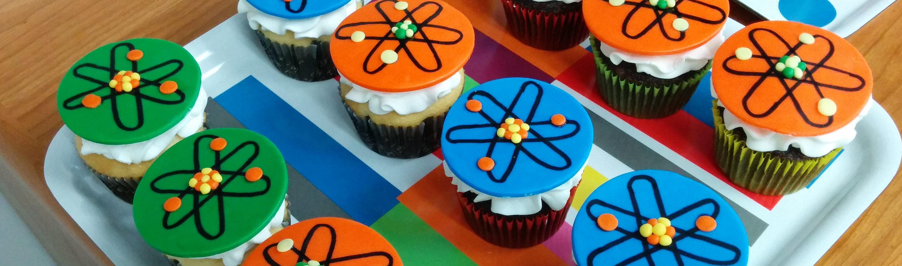

Meetings and AToM Team Members¶

2019.02.04 – PSI/AToM All-hands Meeting and Code Camp¶
| Time: | Monday 4 Feb. – Friday 8 Feb. |
|---|---|
| Location: | General Atomics Bldg 7, Room G07-120 |
| Badges: | gonzalesl@fusion.gat.com |
| Info: | GA Visitor Information |
AGENDA¶
| Day | Time | Speaker | Title |
|---|---|---|---|
| Monday | Logistics and Code Camp | ||
| 09:30AM | Candy | Welcome and logistics | |
| 12:15AM | LUNCH | ||
| 01:30PM | ALL | Code camp | |
| Tuesday | Project Introductions | ||
| 09:00AM | Candy | Logistics (wifi, git) | |
| 09:30AM | Wirth | PSI Intro | |
| 10:00AM | Candy | AToM Intro | |
| 10:30AM | BREAK | ||
| 10:50AM | Overview Presentations | ||
| 11:45AM | LUNCH | ||
| 01:3OPM | Overview Presentations | ||
| 04:3OPM | PSI-AToM informal discussion/coding | ||
| 07:15PM | DINNER | Location TBA | |
| Wednesday | Split day – PSI Presentations | ||
| 09:00AM | TBA | ||
| Wednesday | Split day – AToM Code camp | ||
| 09:00AM | TBA | ||
| Thursday | Tutorials and AToM-PSI Code camp | ||
| 09:00AM | TBA | AToM/PSI tutorials | |
| 01:30PM | TBA | AToM/PSI code camp | |
| 03:30PM | TBA | Action items and wrap-up | |
| Friday | AToM-PSI Code camp | ||
| 09:00AM | TBA | ||
| Attending: |
|---|
- GA: Candy, Meneghini, Smith, Eldon, Belli, Snyder
- ORNL: Batchelor, Elwasif, Park, Cianciosa, Kim, Kessel, Fann
- PPPL: Sachdev
- LLNL: Dorf, Dorr, Debojyoti, Umansky, Ricketson
- MIT: Bonoli
- U. Colorado: Chen
- UCSD: Holland, Jian
- CompX: Kinsey
2018.10.18 – October Conference Call¶
| Time: | Friday, 18 October 2018 – 10:00am-12:30pm PT |
|---|---|
| Agenda: |
- rapid overview of status/activities (36 min total)
- discuss small AToM meeting at APS (for those attending APS-DPP in Nov.) (8 min)
- discuss February all-hands meeting (with PSI2) (8 min)
- action items (goals) to be completed before Feb meeting (10 min)
2018.03.30 – March Conference Call¶
| Time: | Friday, 30 March 2018 – 12:30pm-2:30pm PDT |
|---|---|
| Join: | Email connection info sent (26 March) |
| Agenda: |
- Summary of activity on Thrusts
- A: Meneghini, Kalling, Elwasif
- B: Green, Law
- C: Holland
- D: Kessel, Dorf, Chen
- E: Bernholdt
- F: Bonoli
2018.01.18 – January Conference Call¶
| Time: | Thursday, 18 Jan 2018 – 1:00pm-2:30pm PDT |
|---|---|
| Join: | Email connection info sent (16 Jan) |
| Agenda: |
- Progress on AToM build system
- Tier-0 installation
- GACODE build system
- Spack
- Liaisons
- Use/benchmark cases
- Interacting with SciDAC centers
- Access to ITER scenario database
- Volunteers for webpage work
- Managing publications
- Maintaining project overview/summary pages
- Developing useful software map (including liaison-related info)
2017.11.27 – ESL/AToM All-hands Meeting and Code Camp¶
| Time: | Monday 27 Nov – Thursday Nov 30 |
|---|---|
| Location: | General Atomics Bldg 7, Room G07-120 |
| Badges: | gonzalesl@fusion.gat.com |
| Info: | GA Visitor Information |
AGENDA¶
| Day | Time | Speaker | Title |
|---|---|---|---|
| Monday | ESL day | ||
| 09:30AM | Snyder/Candy | Welcome and logistics | |
| 09:45AM | Snyder | ESL project overview and timeline | |
| 10:00PM | Dorf | COGENT progress and plans | |
| 10:45PM | BREAK | [possible call with J. Mandrekas] | |
| 10:55AM | Candy | CGYRO/NEO progress and plans | |
| 11:40AM | Krasheninnikov | UCSD progress and plans | |
| 12:00PM | DISCUSSION | Physics coordination | |
| 12:15AM | LUNCH | ||
| 01:30PM | Dorr | ESL math overview | |
| 02:30PM | Ghosh | Semi-implicit COGENT time-integration | |
| 03:00PM | Ricketson | Sparse grid methods | |
| 03:30PM | BREAK | ||
| 03:45AM | DISCUSSION | Math and math/physics coordination | |
| 04:00PM | Candy | AToM introduction, relation to ESL | |
| 04:10PM | Snyder/Meneg. | EPED and ESL-AToM coordination | |
| 04:30PM | Dorf/Dorr | COGENT and ESL-AToM coordination | |
| 05:00PM | DISCUSSION | Joint AToM/ESL issues | |
| 07:00PM | DINNER | Location TBA | |
| Tuesday | AToM Presentations | ||
| 09:00AM | Candy | Welcome and AToM overview | |
| 09:40AM | Batchelor | IPS for physics studies | |
| 10:00AM | Holland | Validation thrusts | |
| 10:20AM | Green | WDM thrust action items | |
| 10:40AM | Bonoli | AToM liaisons, SciDAC center interact. | |
| 11:00AM | DISCUSSION | Strategy for WDM, liaisons, integration | |
| 11:40AM | LUNCH | ||
| 01:00PM | Fann | Parallel-in-time methods | |
| 01:20PM | Law | Reduced Models | |
| 01:40PM | Elwasif/Dorr | RAPIDS and FASTMath (ASCR SciDAC) | |
| 02:00PM | BREAK | ||
| 02:20PM | Kessel | Modeling activities at PPPL | |
| 02:40PM | Chen | EP inteaction with MHD/turbulence | |
| 03:00PM | Dorf | Modeling activities at LLNL | |
| 03:20PM | Park | CESOL | |
| 03:40PM | BREAK | ||
| 04:00PM | DISCUSSION | Create action items | |
| 07:00PM | DINNER | Location TBA | |
| Wednesday | AToM Technical day | ||
| 09:00AM | Smith | Logistics, Github navigation, etc | |
| 09:25AM | Elwasif | IPS modules and development | |
| 09:50AM | Kalling | My experience installing AToM | |
| 10:15PM | BREAK | ||
| 10:30AM | DISCUSSION | Strategy for WDM, liaisons, integration | |
| 11:40AM | LUNCH | ||
| 01:00PM | Candy | AToM makefile, Sphinx/rst, website tasks | |
| 01:30PM | Meneghini | AToM+ITER-IMAS = OMAS | |
| 02:00PM | Snoep | 1.5D STRAHL-TGYRO coupling | |
| 07:00PM | DINNER | Location TBA | |
| Thursday | AToM hackathon | ||
| 09:00AM | CODING | Questions and open discussion/coding | |
| 11:40AM | LUNCH | ||
| 01:30AM | CODING | Questions and open discussion/coding | |
| 07:00PM | DINNER | Location TBA | |
2017.09.27 – Kickoff Conference call¶
| Time: | Wednesday, 27 Sept 2017 – 1:00pm-2:30pm PDT |
|---|---|
| Join: | https://fusion.gat.com/global/Remote13-301 |
| Agenda: |
- Summary of AToM-0, vision for AToM (Candy, 10 min)
- Self-introduction from each team member (all, 20 min)
- Summary presentations by AToM-0 Institutional PIs
- Bernholdt (6 min)
- Dorf (6 min)
- Dorr (6 min)
- Green (6 min)
- Holland (6 min)
- Open discussion of action items for November F2F meeting at GA (30 min)
AToM Team (2017-present)¶
| Project PI: | |
|---|---|
| FES PIs: | David L. Green, Oak Ridge National Laboratory, @dlg0
Mikhail Dorf, Lawrence Livermore National Laboratory
Christopher Holland, University of California, San Diego
Charles Kessel, Princeton Plasma Physics Laboratory
|
| ASCR PIs: | David E. Bernholdt, Oak Ridge National Laboratory
Milo Dorr, Lawrence Livermore National Laboratory
David Schissel, General Atomics
|
| Contractors: | Paul Bonoli, Massachusetts Institute of Technology
Richard Kalling, Kalling Software, @kalling
Yang Chen, University of Colorado, Boulder
Don Batchelor, Oak Ridge National Laboratory
|
| Funded Collaborators: | |
O. Meneghini, General Atomics, @orso82
S.P. Smith, General Atomics, @smithsp
P.B. Snyder, General Atomics
D. Eldon, General Atomics @eldond
E. Belli, General Atomics
M. Kostuk, General Atomics, @kostukm
W. Elwasif, Oak Ridge National Laboratory, @elwasif
G. Fann, Oak Ridge National Laboratory
M. Cianciosa, Oak Ridge National Laboratory, @cianciosa
J.M. Park, Oak Ridge National Laboratory
K. Law, Oak Ridge National Laboratory, @klaw1980
M. Umansky Lawerence Livermore National Laboratory
A. Pankin Lawerence Livermore National Laboratory, @pankin
D. Orlov, University of California, San Diego
N. Howard, Massachusetts Institute of Technology
J. Sachdev, Princeton Plasma Physics Laboratory, @jsachdev
|
|
Original AToM Team (2014-2017)¶
| Project PI: | Jeff Candy, General Atomics
General Atomics, P.O. Box 85608
San Diego, CA 92186
Ph: 858-455-2593
|
|---|---|
| FES PIs: | David L. Green, Oak Ridge National Laboratory, @dlg0
Mikhail Dorf, Lawrence Livermore National Laboratory
Christopher Holland, University of California, San Diego
|
| ASCR PIs: | David E. Bernholdt, Oak Ridge National Laboratory
Milo Dorr, Lawrence Livermore National Laboratory
David Schissel, General Atomics
|
| Funded Collaborators: | |
O. Meneghini, General Atomics, @orso82
S. Smith, General Atomics, @smithsp
P.B. Snyder, General Atomics
W. Elwasif, Oak Ridge National Laboratory, @elwasif
E. D’Azevedo, Oak Ridge National Laboratory
J.M. Park, Oak Ridge National Laboratory
D. Batchelor, Oak Ridge National Laboratory
M. Umansky Lawerence Livermore National Laboratory
V. Izzo, University of California, San Diego
D. Orlov, University of California, San Diego
|
|